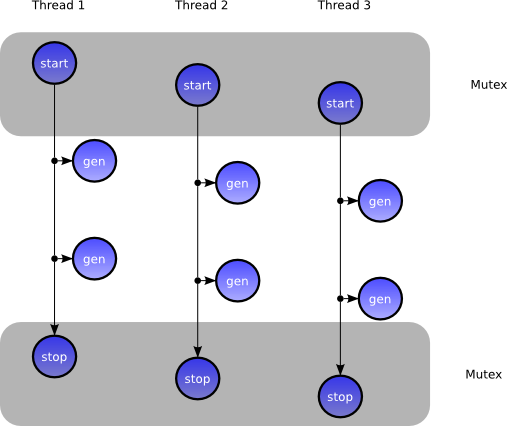
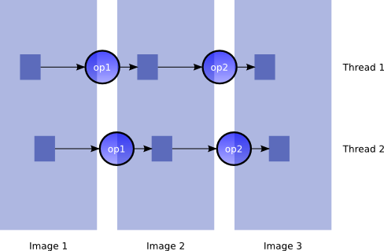
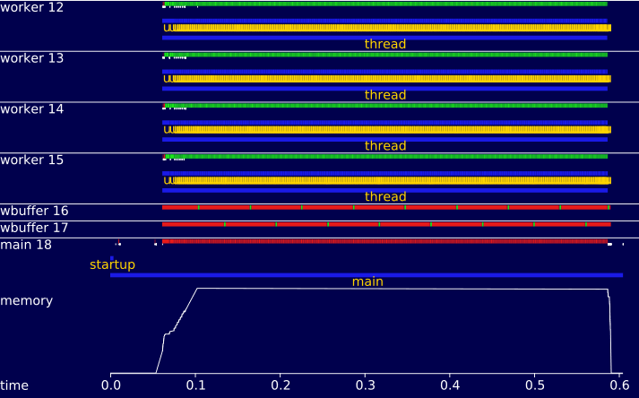
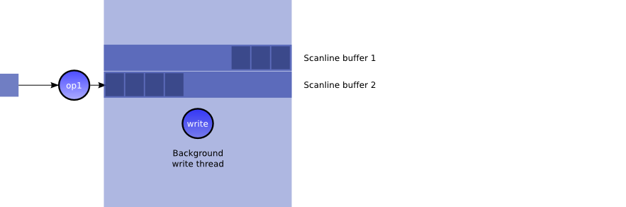
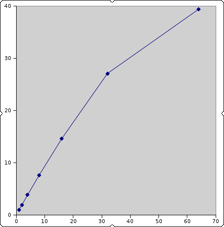

Technical background > Evaluation [src]
Compared to most image processing libraries, libvips needs little RAM and runs quickly, especially on machines with more than one CPU. libvips achieves this improvement by only keeping the pixels currently being processed in RAM and by having an efficient, threaded image IO system. This page explains how these features are implemented.
Images
libvips images have three dimensions: width, height and bands. Bands usually (though not always) represent colour. These three dimensions can be any size up to 2 ** 31 elements. Every band element in an image has to have the same format. A format is an 8-, 16- or 32-bit int, signed or unsigned, 32- or 64-bit float, and 64- or 128-bit complex.
Regions
An image can be very large, much larger than the available memory, so you can’t just access pixels with a pointer *.
Instead, you read pixels from an image with a region. This is a rectangular sub-area of an image. In C, the API looks like:
VipsImage *image = vips_image_new_from_file(filename, NULL);
VipsRegion *region = vips_region_new(image);
// ask for a 100x100 pixel region at 0x0 (top left)
VipsRect r = { .left = 0, .top = 0, .width = 100, .height = 100 };
if (vips_region_prepare(region, &r))
vips_error(...);
// get a pointer to the pixel at x, y, where x, y must
// be within the region
// as long as you stay within the valid area for the region,
// you can address pixels with regular pointer arithmetic
// compile with -DDEBUG and the macro will check bounds for you
// add VIPS_REGION_LSKIP() to move down a line
VipsPel *pixel = VIPS_REGION_ADDR(region, x, y);
// you can call <a href="method.Region.prepare.html"><code>vips_region_prepare()</code></a> many times
// everything in libvips is a GObject ... when you're done,
// just free with
g_object_unref(region);
The action that vips_region_prepare() takes varies with the type of
image. If the image is a file on disc, for example, then libvips will arrange
for a section of the file to be read in.
(* there is an image access mode where you can just use a pointer, but it’s rarely used)
Partial images
A partial image is one where, instead of storing a value for each pixel, libvips stores a function which can make any rectangular area of pixels on demand.
If you use vips_region_prepare() on a region created on a partial image,
libvips will allocate enough memory to hold the pixels you asked for and use
the stored function to calculate values for just those pixels *.
The stored function comes in three parts: a start function, a generate function and a stop function. The start function creates a state, the generate function uses the state plus a requested area to calculate pixel values and the stop function frees the state again. Breaking the stored function into three parts is good for SMP scaling: resource allocation and synchronisation mostly happens in start functions, so generate functions can run without having to talk to each other.
libvips makes a set of guarantees about parallelism that make this simple to program. Start and stop functions are mutually exclusive and a state is never used by more than one generate. In other words, a start / generate / generate / stop sequence works like a thread.

(* in fact libvips keeps a cache of calculated pixel buffers and will return a pointer to a previously-calculated buffer if it can)
Operations
libvips operations read input images and write output images, performing some transformation on the pixels. When an operation writes to an image the action it takes depends upon the image type. For example, if the image is a file on disc then libvips will start a data sink to stream pixels to the file, or if the image is a partial one then it will just attach start / generate / stop functions.
Like most threaded image processing systems, all libvips operations have to be free of side-effects. In other words, operations cannot modify images, they can only create new images. This could result in a lot of copying if an operation is only making a small change to a large image so libvips has a set of mechanisms to copy image areas by just adjusting pointers. Most of the time no actual copying is necessary and you can perform operations on large images at low cost.
SIMD optimisations
libvips uses Highway, a C++ library, to optimise various operations with SIMD/vector instructions. These optimised code paths are flexible and can adapt to different instruction sets, including those with ‘scalable’ vectors (size unknown at compile time). At runtime, dynamic dispatch selects the best available implementation based on the processor’s capabilities, ensuring optimal performance.
SIMD typically speeds operations up by a factor of three or four.
Joining operations together
The region create / prepare / prepare / free calls you use to get pixels from an image are an exact parallel to the start / generate / generate / stop calls that images use to create pixels. In fact, they are the same: a region on a partial image holds the state created by that image for the generate function that will fill the region with pixels.

libvips joins image processing operations together by linking the output of one operation (the start / generate / stop sequence) to the input of the next (the region it uses to get pixels for processing). This link is a single function call, and very fast. Additionally, because of the the split between allocation and processing, once a pipeline of operations has been set up, libvips is able to run without allocating and freeing memory.
This graph (generated by vipsprofile, the libvips profiler) shows memory use
over time for a libvips pipeline running on a large image. The bottom trace
shows total memory, the upper traces show threads calculating useful results
(green), threads blocked on synchronisation (red) and memory allocations
(white ticks).

Because the intermediate image is just a small region in memory, a pipeline of operations running together needs very little RAM. In fact, intermediates are small enough that they can fit in L2 cache on most machines, so an entire pipeline can run without touching main memory. And finally, because each thread runs a very cheap copy of just the writeable state of the entire pipeline, threads can run with few locks. libvips needs just four lock operations per output tile, regardless of the pipeline length or complexity.
Data sources
libvips has data sources which can supply pixels for processing from a variety of sources. libvips can stream images from files in libvips native format, from tiled TIFF files, from binary PPM/PGM/PBM/PFM, from Radiance (HDR) files, from FITS images and from tiled OpenEXR images. libvips will automatically unpack other formats to temporary disc files for you but this can obviously generate a lot of disc traffic. It also has a special sequential mode for streaming operations on non-random-access formats. Another section in these docs explains how libvips opens files. One of the sources uses the ImageMagick (or optionally GraphicsMagick) library, so libvips can read any image format that these libraries can read.
libvips images are held on disc as a 64-byte header containing basic image information like width, height, bands and format, then the image data as a single large block of pixels, left-to-right and top-to-bottom, then an XML extension block holding all the image metadata, such as ICC profiles and EXIF blocks.
When reading from a large libvips image (or any other format with the same structure on disc, such as binary PPM), libvips keeps a set of small rolling windows into the file, some small number of scanlines in size. As pixels are demanded by different threads libvips will move these windows up and down the file. As a result, libvips can process images much larger than RAM, even on 32-bit machines.
Data sinks
In a demand-driven system, something has to do the demanding. libvips has a variety of data sinks that you can use to pull image data though a pipeline in various situations. There are sinks that will build a complete image in memory, sinks to draw to a display, sinks to loop over an image (useful for statistical operations, for example) and sinks to stream an image to disc.
The disc sink looks something like this:

The sink keeps two buffers*, each as wide as the image. It starts threads as rapidly as it can up to the concurrency limit, filling each buffer with tiles** of calculated pixels, each thread calculating one tile at once. A separate background thread watches each buffer and, as soon as the last tile in a buffer finishes, writes that complete set of scanlines to disc using whatever image write library is appropriate. libvips can write with libjpeg, libtiff, libpng and others. It then wipes the buffer and repositions it further down the image, ready for the next set of tiles to stream in.
These features in combination mean that, once a pipeline of image processing operations has been built, libvips can run almost lock-free. This is very important for SMP scaling: you don’t want the synchronization overhead to scale with either the number of threads or the complexity of the pipeline of operations being performed. As a result, libvips scales almost linearly with increasing numbers of threads:

Number of CPUs is on the horizontal axis, speedup is on the vertical axis. Taken from the [[Benchmarks]] page.
(* there can actually be more than one, it allocate enough buffers to ensure that there are at least two tiles for every thread)
(** tiles can be any shape and size, libvips has a tile hint system that operations use to tell sinks what tile geometry they prefer)
Operation cache
Because libvips operations are free of side-effects*, you can cache them. Every time you call an operation, libvips searches the cache for a previous call to the same operation with the same arguments. If it finds a match, you get the previous result again. This can give a huge speedup.
By default, libvips caches the last 100 operation calls. You can also control the cache size by memory use or by files opened.
(* Some libvips operations DO have side effects, for example,
vips_draw_circle() will draw a circle on an image. These operations emit an
“invalidate” signal on the image they are called on and this signal makes
all downstream operations and caches drop their contents.)
Operation database and APIs
libvips has around 300 image processing operations written in this style. Each operation is a GObject class. You can use the standard GObject calls to walk the class hierarchy and discover operations, and libvips adds a small amount of extra introspection metadata to handle things like optional arguments.
The C API is a set of simple wrappers which create class instances for you. The C++ API is a little fancier and adds things like automatic object lifetime management. The command-line interface uses introspection to run any libvips operation in the class hierarchy.
There are bindings for many other languages on many platforms. Most of these bindings use the introspection system to generate the binding at run-time.
Snip
The libvips GUI, nip2, has its own scripting language called Snip. Snip is a lazy, higher-order, purely functional, object oriented language. Almost all of nip2’s menus are implemented in it, and nip2 workspaces are Snip programs.
libvips operations listed in the operation database appear as Snip functions. For
example, abs can be used from Snip as:
// absolute value of image b
a = vips_call "abs" [b] [];
However, abs won’t work on anything except the primitive .v image type.
It can’t be used on any class, or list or number. Definitions in _stdenv.dev
wrap each libvips operation as a higher level Snip operation. For example:
abs x
= oo_unary_function abs_op x, is_class x
= vips_call "abs" [x] [], is_image x
= abs_cmplx x, is_complex x
= abs_num x, is_real x
= abs_list x, is_real_list x
= abs_list (map abs_list x), is_matrix x
= error (_ "bad arguments to " ++ "abs")
{
abs_op = Operator "abs" abs Operator_type.COMPOUND false;
abs_list l = (sum (map square l)) ** 0.5;
abs_num n
= n, n >= 0
= -n;
abs_cmplx c = ((re c)**2 + (im c)**2) ** 0.5;
}
This defines the behaviour of abs for the base Snip types (number, list,
matrix, image and so on), then classes will use that to define operator
behaviour on higher-level objects.
Now you can use:
// absolute value of anything
a = abs b;
and you ought to get sane behaviour for any object, including things like
the Matrix class.
You can write Snip classes which present functions to the user as menu
items. For example, Math.def has this:
Math_arithmetic_item = class
Menupullright "_Arithmetic" "basic arithmetic for objects" {
Absolute_value_item = class
Menuaction "A_bsolute Value" "absolute value of x" {
action x = map_unary abs x;
}
}
Now the user can select an object and click Math / Abs to find the absolute
value of that object.